Create Temenos API
By using Temenos Sandbox and Developer package, you can create your new APIs and publish them on the MarketPlace web site. This document will guide you step-by-step to create an API in 30 minutes.
Introduction
IRIS is an open source GitHub project and provides Interaction, Reporting and Information Services. This project is developed and maintained by Temenos.
Prerequisites
To build an IRIS data service, you need to meet the following requirements:
- Knowledge of Web technologies
- Knowledge of OData & RESTful services
- Temenos MarketPlace Products
- Temenos Sandbox
- Temenos Design Studio
- Microsoft Windows operating system (Windows 7 or higher) & Internet connection
- Access to GitHub platform
Also, please follow this 3 minutes user guide.
Environment Setup
Download Temenos Design Studio from My Apps section of Temenos MarketPlace and extract files from the Temenos Design Studio (or your current version) to a directory on your computer. Make sure your path does not contain any spaces or special character.
Download Prospect-IRIS project
You need to have GitHub account in order to download the default Prospect project. Click here Join GitHub, if you don't have GitHub account
Install Git on your local machine - Git
After installation of Git, fork the Prospect-iris, to fork the project go to https://github.com/temenostech/Prospect-IRIS.
There are 2 options: either fork or download Prospect-IRIS
Go to clone or download button and choose download
Create a folder inside GitHub folder. In current example is named: Prospect-IRISc. Copy the downloaded and extracted ZIP into the newly created folder. Now you have This is what the folder contains:
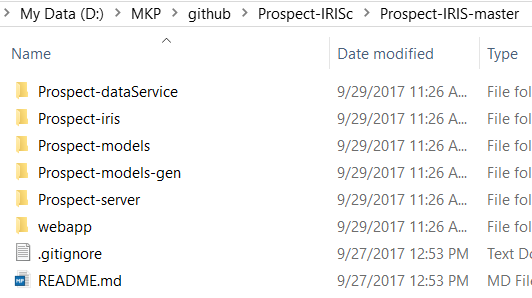
Note
Please use Prospect-IRIS only if you have DesignStudio 201711, with any other version the build will fail. In case you have a different version of DesignStudio then, instead of using Prospect-IRIS project you should create an IRIS Data Service Project, remove whatever is coming by default and follow the other instructions present on this page.
Design Studio environment
Open Design Studio and provide the workspace name 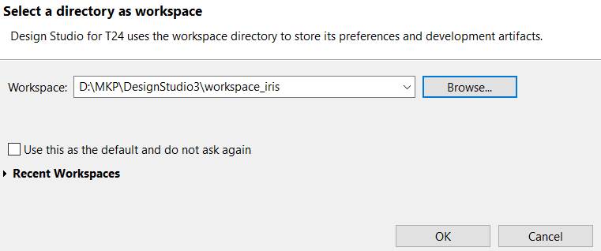
Go to File - Import - than choose Existing Maven Projects 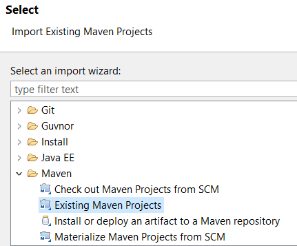
Now select the root directory as the path where your Prospec-IRIS folder was created and press Finish

Wait until the project is completely updated.
Note
Don't forget to save each change (CTRL+S)
After updating all 4 projects, click right on Package explorer and choose Maven > Update Project. 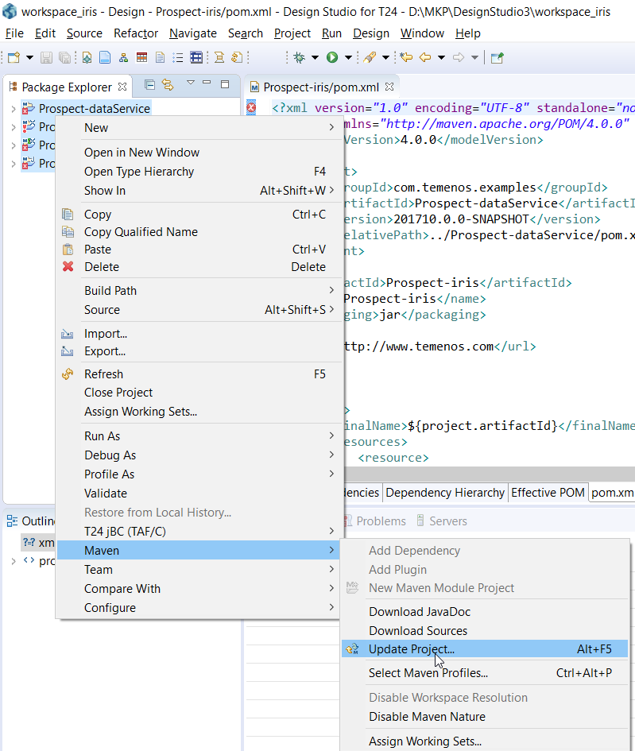
In the new window, uncheck Offline button and choose Force Update of Snapshots/ Releases 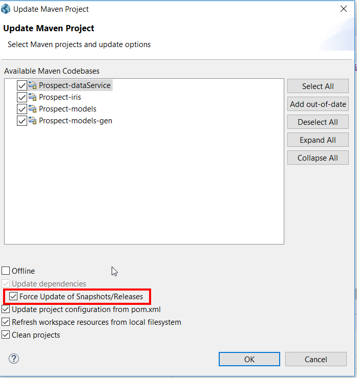
Import Prospect-server
Prospect server is responsible to communicate with Temenos Sandbox
Go to File > Import > then select Existing Projects into Workspace 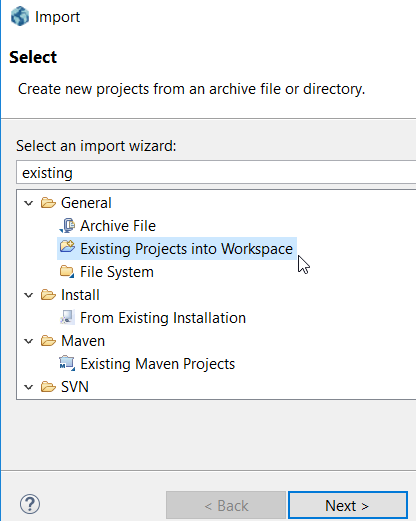
Click Next and then select the root directory (Insert the path where your Prospect server folder is located). Then click finish 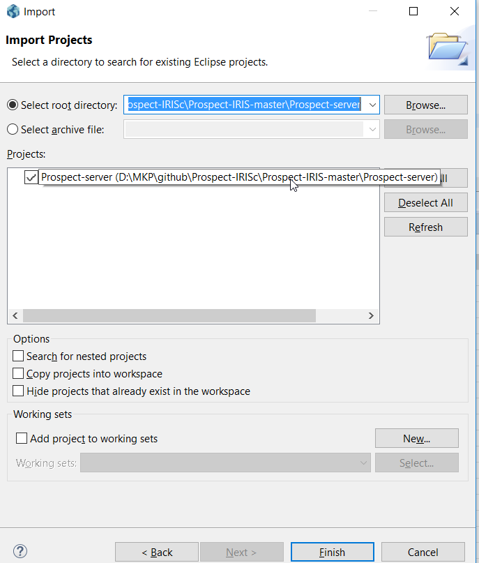
Prospect-server will appear updated now under Package Explorer, along with the other existing projects.
Build the Prospect-IRIS project
Go to Prospect-dataService, right click on Package.launch and choose Run as package 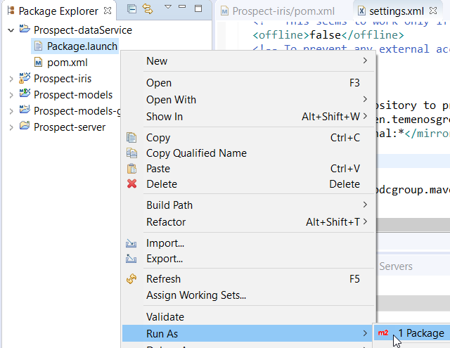
Wait for the build to be completed. In the Console tab, you should get [INFO] BUILD SUCCESS
Prospect-iris.war file will be generated that can be taken and deployed 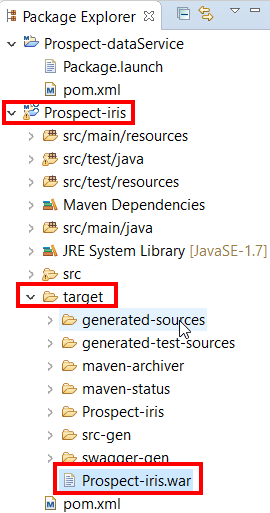
Connect Prospect with the Sandbox
In order to establish the connection with Temenos Sandbox:
Expand the *-server project and double click the server.properties file.
Enter the user name, password, host name and port number. You can get these details from your Temenos Sandbox. 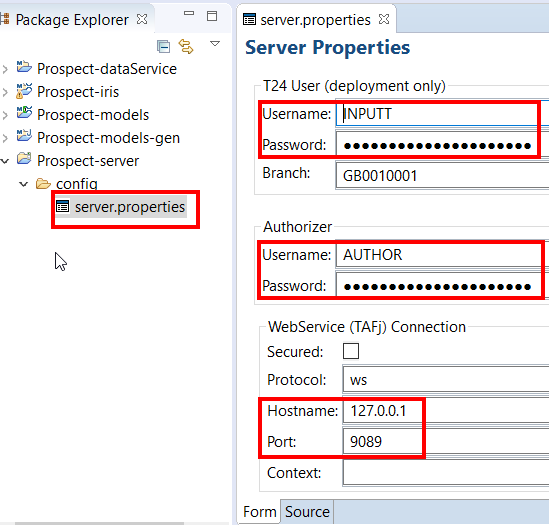
Start the server: click the Servers tab, right-click T24 Connection and click Start (or Restart) 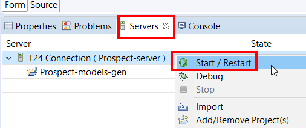
State will change into Active
Import enquiries or versions
On the top menu, click File > Import
A new window appears. Here, expand Design Studio, click Import T24 Enquiries and then click Next 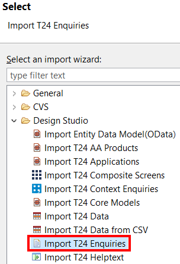
Select the enquiry you want to add to your project. 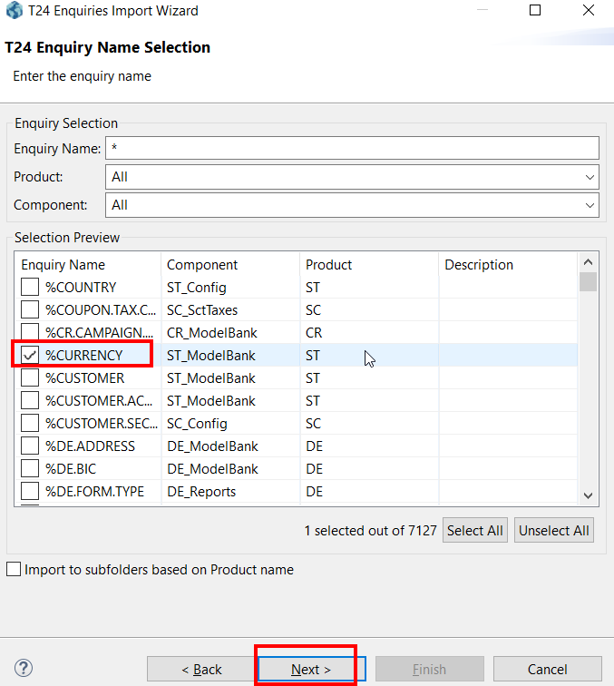
Save this enquiry in the enquiry folder of the -models project. Click **Finish* 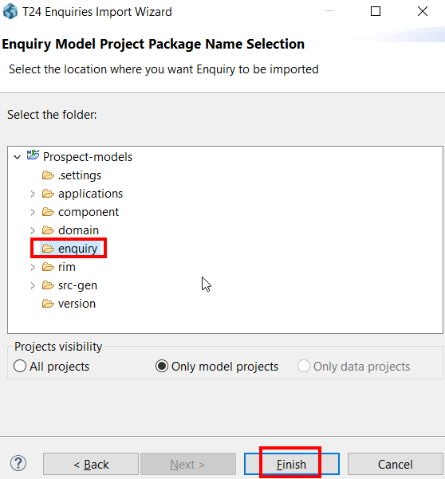
A success message is displayed. Click OK to close this message.
The enquiry is your *-models project. 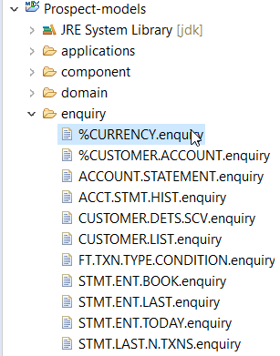
Create a RIM file
To create a RIM file:
Right-click the imported enquiry.
In the context menu, click Design Studio and then click Generate Code.
Result: The enqCURRENCY-LIST.rim file has been generated in the following directory: *-models\rim\gen\T24\enqCURRENCY-LIST.rim 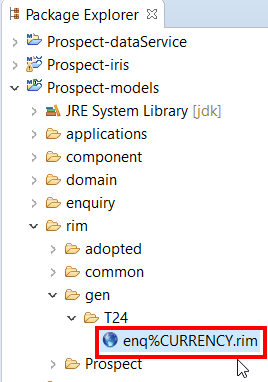
Add the enquiry to the Service Document
The last step in creating your API is to add the RIM definition to the service document. The service document is in the following directory: *-models project\rim\project_name\project_name.rim 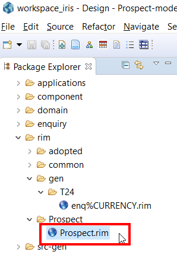
Double click the rim file with your project name, for example Prospect.rim. The contents of the file are displayed in the right pane. 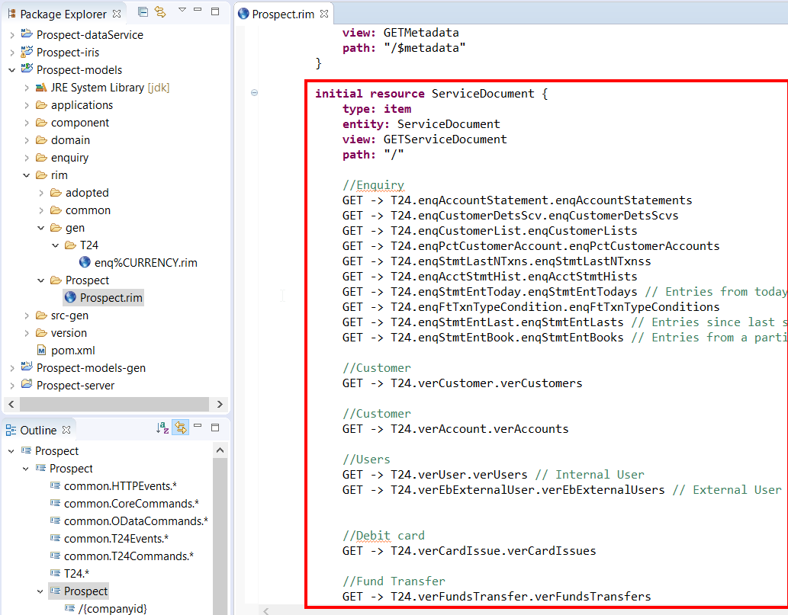
Add the newly created RIM reference in the Service Document resource. Make sure you follow the correct sequence: Domain Name > RIM Name > Resource Name (Collection)
Example:
T24.enqPctCurrency.enqPctCurrency 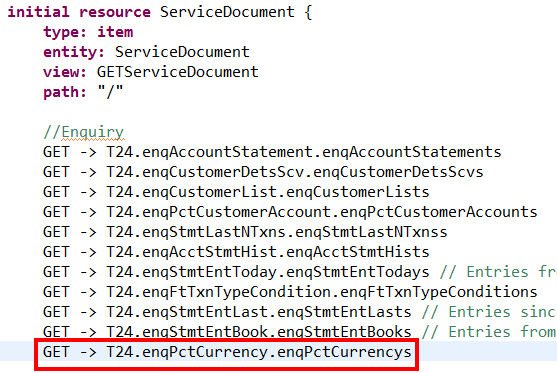
Verifying the new link in the Service Document
Make sure that you are able to navigate from the Service Document to the newly added rim file. To test the link, control-click the new resource definition. You should be able to go the enqPctCurrency resource. 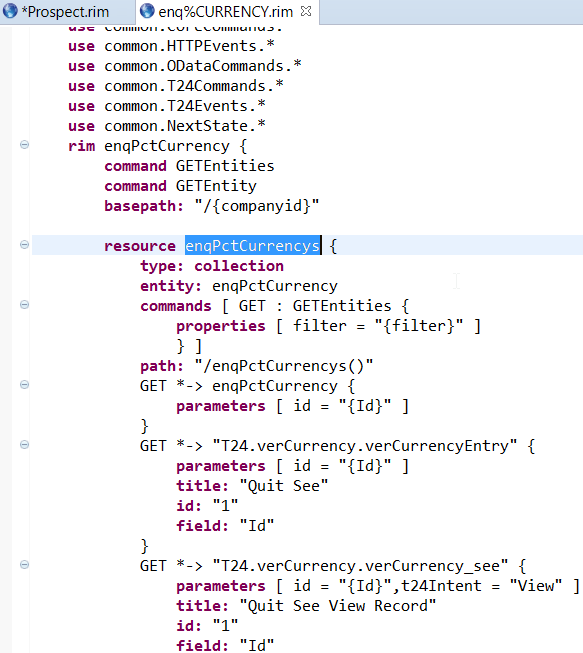
Rebuild your data service. Go to Prospect-dataService > Package.launch > Run As > Package 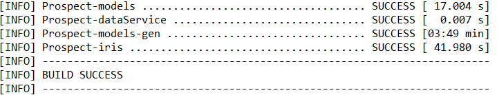